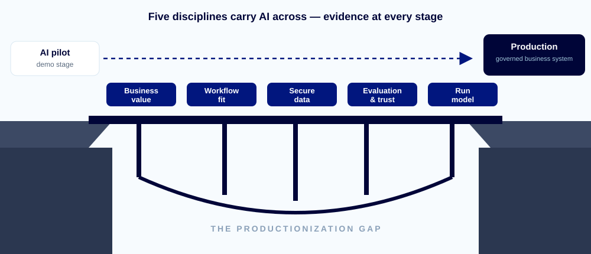
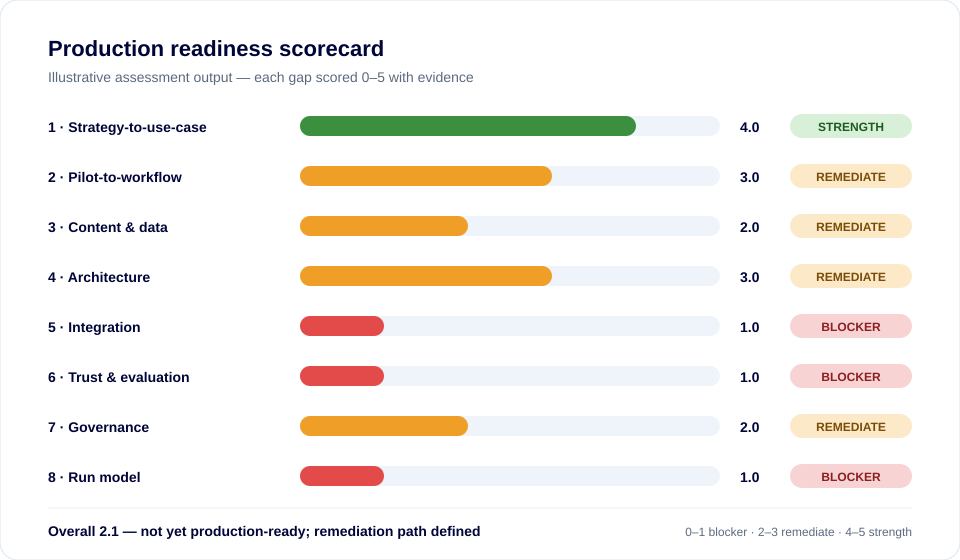

Business value & ownership
Is the outcome important, measurable, funded and owned by someone with authority to change the process?
Netwoven helps organizations turn copilots, RAG applications and agentic workflows into secure, integrated, reliable and supportable production systems—with measurable business outcomes.
Trusted by leading brands

A technically successful pilot is not yet a production business system. The difficult work starts when it must use real enterprise data, integrate with real processes, pass security review, earn user trust and remain reliable after launch. Across the industry, MIT found 95% of GenAI pilots deliver no measurable P&L impact, and S&P Global reports 42% of companies abandoned most of their AI initiatives in a single year.

Netwoven assesses every candidate across the business, technology, trust and operating disciplines required for enterprise production.
Is the outcome important, measurable, funded and owned by someone with authority to change the process?
Is AI embedded into the way work is actually performed, with roles, exceptions and user adoption designed?
Are sources current, accessible, permission-aware, governed and suitable for production-scale retrieval or action?
Is the pattern appropriately simple, scalable, resilient, testable and maintainable for the use case?
Can the solution safely read and write to systems of record, approvals and downstream workflows?
Can grounding, accuracy, safety and reliability be measured through repeatable evaluation and release gates?
Are identity, privacy, policy, auditability, accountability and human oversight designed into the system?
Who owns monitoring, incidents, model changes, content freshness, access reviews, cost and value after launch?

Netwoven’s Pilot-to-Production Framework — the AI Productionization Bridge™ — makes readiness demonstrated rather than assumed: each stage produces evidence, decisions and exit criteria.
Validate value, inventory evidence and score the eight gaps.
Select the right AI pattern and define target architecture.
Implement identity, security and release controls; connect systems, approvals and exceptions.
Prove evaluation, security and operational evidence before go-live.
Controlled rollout with adoption support and hypercare.
Monitor, govern and continuously improve through AgentOps.
Replicate proven patterns across workflows and functions.
A connected service portfolio that supports enterprise AI from prioritization and adoption through productionization, security and ongoing operations.
Identify high-value use cases, assess feasibility and data readiness, establish governance foundations and create a prioritized roadmap.
Discuss AI readiness →Move from licenses to role-based scenarios, secure rollout, user enablement, champions, adoption measurement and value realization.
Plan Copilot adoption →Turn copilots, RAG applications and agentic workflows into secure, integrated, evaluated and operable production systems.
Start with the workshop →Design identity, data protection, Responsible AI controls, auditability, agent governance and enterprise policy enforcement.
Review AI security →Monitor quality and latency, control releases, refresh grounding content, review access, optimize cost and report business value.
Explore AgentOps →Start from reusable, governed patterns for contract intelligence, SalesOps, enterprise knowledge and other high-friction workflows.
View solutions →This is not a generic AI presentation. Netwoven facilitates a focused two-hour discussion around your real use cases, current evidence and enterprise constraints.
Recommended participants: business sponsor, process owner, AI/application owner, security or governance lead, and enterprise architecture or IT.

One or two high-value use cases selected for deeper consideration.
An initial view across the eight production gaps.
The blockers, risks, owners and unresolved assumptions requiring attention.
Practical next steps for validating and advancing the strongest candidate.
The framework includes a catalog of enterprise AI design patterns—each with defined controls, evaluation methods and an autonomy ceiling. We select the least-complex pattern that meets the need, then take it through the production gates.
Configure what already exists—tenant setup, DLP, usage policy and adoption—when standard capability meets the need.
Cited answers over governed content with ACL trimming, source hierarchy, freshness rules and explicit not-found behavior.
Retrieves, calculates and drafts through bounded enterprise tools—typed schemas, least privilege, timeouts and human confirmation.
Rules, state machines and approval gates lead; the LLM contributes only where interpretation or generation adds value.
Acts on systems of record behind signed confirmations, idempotency, field-level security and rollback design.
Used only when justified—with budgets, stop conditions, continuous monitoring and human override designed in.
Permission-aware contract Q&A, clause citations, compliant drafting, deviation detection, approvals and audit-ready lineage.
Built on: permission-aware RAG · tool-using assistant · approval workflow
View solution brief →Proactive forecast hygiene, live pricing guardrails, Teams-based action cards and controlled CRM write-back.
Built on: deterministic-first workflow · write-safe transactional agent
View solution brief →Authoritative, permission-aware answers with citations, content freshness controls and deployable Teams, SharePoint or Copilot experiences.
Built on: permission-aware RAG · ready-made Copilot surfaces
View solution brief →Netwoven brings together the capabilities that are typically fragmented across AI specialists, platform teams, security consultants and managed-service providers.

Netwoven is Microsoft-first, not model-exclusive. We select the appropriate platform and model based on enterprise architecture, data sensitivity, integration, performance, governance and commercial requirements.
No. The framework can be used to qualify an idea before a pilot, assess a pilot already underway, rescue a stalled initiative or harden a deployed application that lacks sufficient governance and operations.
Production readiness is demonstrated through business ownership, workflow fit, reliable and permission-aware data, suitable architecture, enterprise integration, repeatable evaluation, security and governance controls, adoption readiness and an accountable run model.
You receive the initial heatmap and action plan. Depending on the findings, the next step may be internal remediation, a detailed Production Readiness Assessment, a targeted productionization sprint or a broader rollout program.
Managed AgentOps is the operating model after launch. It covers monitoring, evaluation, incident response, prompt and workflow versioning, model changes, retrieval quality, content freshness, access reviews, cost optimization and business-value reporting.
Bring your most promising candidates. We will help your team identify the production gaps, prioritize the strongest one and define a practical next step.